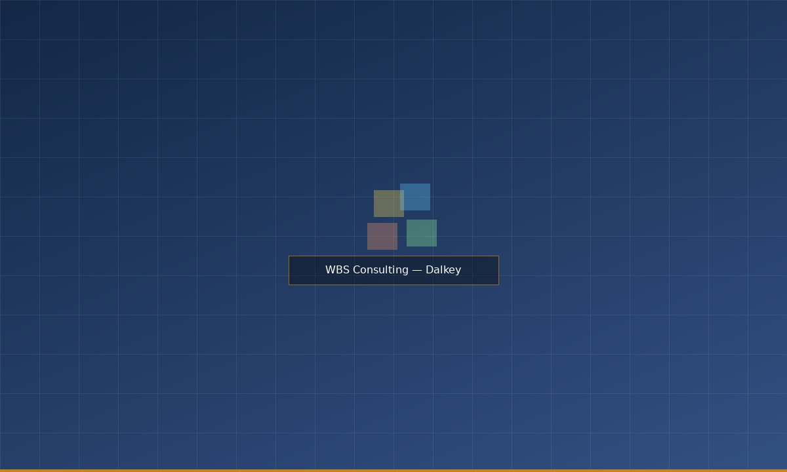
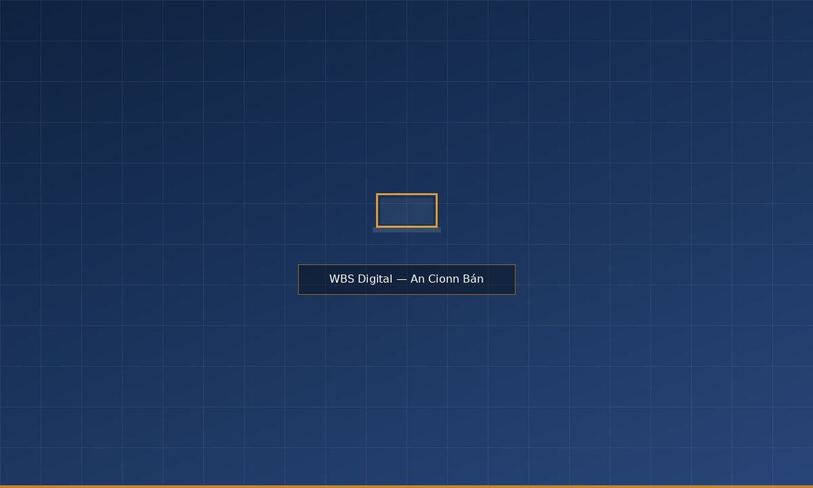
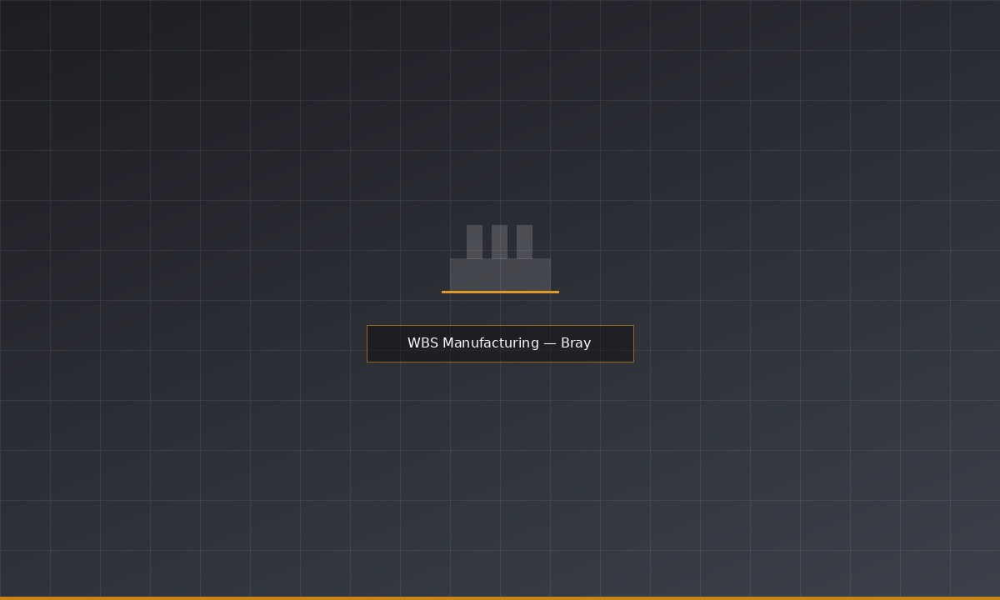

Three specialist divisions. One integrated offer. WBS brings together design, digital, and manufacturing capability that few single partners can match.
Our consulting practice works with public bodies, healthcare organisations, financial services, and growth-stage businesses to tackle complex design challenges — from service redesign and patient pathway improvement to brand strategy and innovation management.
We bring an honest, evidence-led approach to every engagement. Our teams combine design research, service design methodology, and strategic facilitation to help clients understand their challenges clearly, then act on them effectively.
End-to-end service redesign, journey mapping, and implementation support for complex public and private services.
User research, ethnographic studies, and evidence synthesis to ground decision-making in genuine insight.
Facilitated innovation programmes, opportunity mapping, and strategic roadmapping for organisations at a turning point.
Brand strategy, visual identity, and communications frameworks for organisations undergoing change or growth.
"WBS brought clarity to a programme that had resisted clarity for three years. Their ability to work alongside our teams — rather than simply presenting to them — made a genuine difference."
— Director of Operations, Irish public sector client

Our digital team operates from An Cionn Bán on the east Cork coast — a Gaeltacht area whose designation reflects WBS's commitment to regional development and to working in communities beyond Ireland's major urban centres.
Oifig Ghaeltachta · An Cionn Bán, Co. ChorcaíWBS Digital builds web and mobile products from concept through to deployment and ongoing support — for clients in healthcare, retail, logistics, government, and professional services. We take a user-centred approach throughout, ensuring that what we build is grounded in how people actually behave, not how we imagine they might.
Our team includes product designers, front-end and back-end developers, QA engineers, and project managers — giving clients a single partner for the full product lifecycle, from discovery to live.
User research, information architecture, interaction design, and usability testing for web and mobile products.
Full-stack development of responsive web platforms and native iOS and Android applications.
API development and integration across CRM, ERP, payment, and third-party data systems.
Post-launch support, performance monitoring, and ongoing product improvement.
Our Wicklow facility provides end-to-end contract manufacturing for consumer and industrial clients — from tooling and prototyping through to high-volume assembly and quality-assured dispatch. We work with OEM partners, direct brands, and product development firms who require a reliable, experienced manufacturing partner in Ireland.
The Bray site is ISO 9001:2015 certified and operates under a quality management system that covers incoming materials, in-process inspection, and final product verification. We have experience across plastics, electromechanical assemblies, packaging, and composite components.
In-house toolmaking, rapid prototyping, and design-for-manufacture consultation to optimise for production.
High and medium volume injection moulding in a range of thermoplastics, with full colour-matching capability.
Electromechanical assembly, sub-assembly, surface finishing, and pack-out to retail-ready standard.
Inline inspection, CMM measurement, and full traceability documentation for regulated and consumer product categories.
"The Bray team knows their craft. They hit tooling milestones the first time and the production tolerances have been consistent across every batch."
— Engineering Director, OEM client (consumer products)
Whether it's a consulting engagement, a digital product, or a manufacturing partnership, we'd welcome a conversation. No obligation, no jargon.